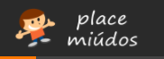

PLACE Miúdos
A plataforma PLACE consiste numa diversidade de serviços e recursos destinados à Comunidade Educativa da Região Autónoma da Madeira, sobretudo ao nível da disponibilização de diversas aplicações web com vista a facilitar o processo de gestão escolar.
Objetivo da aplicação
Ajudar as escolas, fornecendo informações úteis para gestão correta das informações contidas no PLACE e promover uma partilha de informação entre os intervenientes no processo educativo na RAM
Neste separador iremos abordar três temas fundamentais:
• Escola:
Recursos da Escola
Interrupçoes Letivas
Relatórios
Exportações
• Docentes
Horários
Sumários
• Alunos
Inscrições
Renovações
Turmas
Transferências
Ação Social
Em cada um dos itens, vamos especificá-los de acordo com as necessidades mais sentidas por parte dos utilizadores.